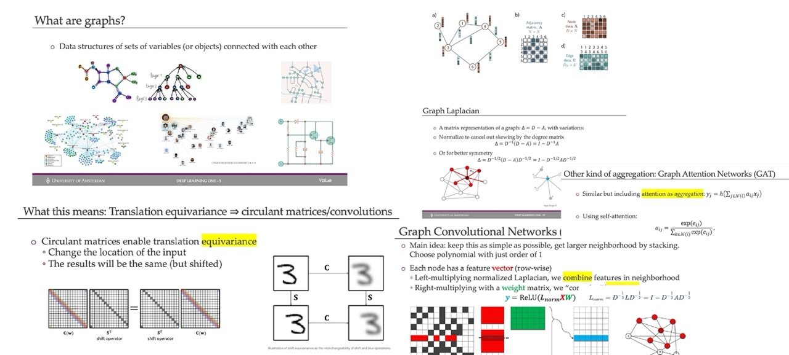
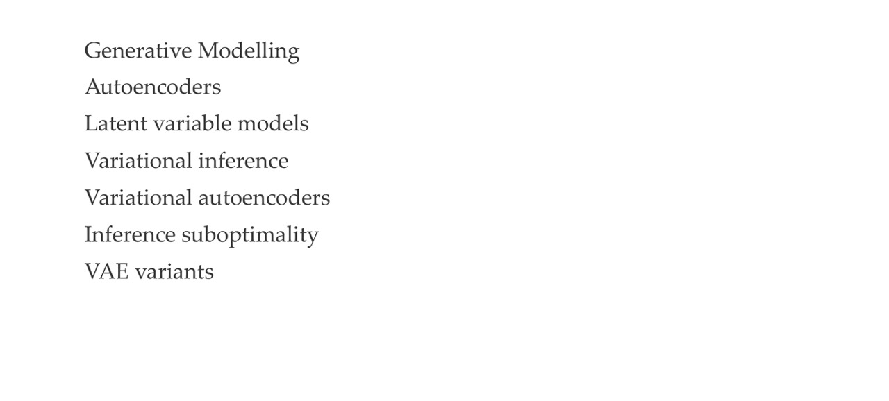
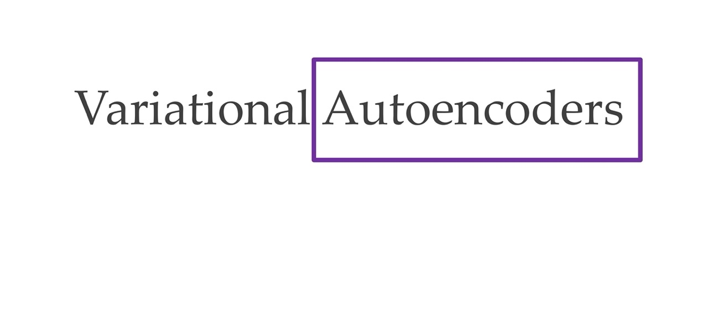
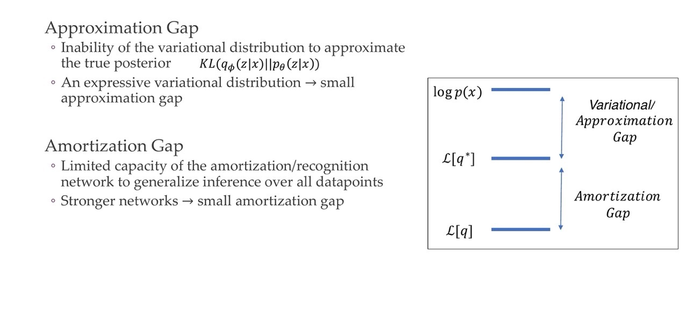

1 Re Cap Graph representation for us

2 Title
3 Recap sss yyy
4 Title
5 Today’s lecture Overview

6 What is generative modelling?
General: - p(x) is the probability distribution of the data itself.
Discriminative model: discriminate between different kinds of data instances - you predict \(y\) given \(x\), where \(y\) could be the label i.e what kind of dog is in the image and \(x\) is the data. - p(y|x) Its aim is to model the decision boundary (whether is A or B, the cat class or the dog class) or the relationship between input features and the output directly. - p(y|x) says get me a certain label conditional on some inputs. - Typically more effective when the primary goal is to perform a specific task, such as classification or regression.
Generative models: can generate new data instances. - They focus on estimating the probability of observing a particular set of input features - p(x) says how probable an image is to be i.e a dog - Can be used for tasks like data generation, missing data imputation, and anomaly detection. - capture the joint probability p(X, Y), or just p(X) if there are no labels.
The difference:
A generative model could generate new photos of animals that look like real animals, while a discriminative model could tell a dog from a cat. GANs are just one kind of generative model.
About probability dsitributions:
A Discriminative classifier like a decision tree can label an instance without assigning a probability to that label. Such a classifier would still be a model because the distribution of all predicted labels would model the real distribution of labels in the data.
A Generative model can model a distribution by producing convincing “fake” data that looks like it’s drawn from that distribution.
Generative models tackle a more difficult task than analogous discriminative models. Generative models have to model more.
A generative model for images might capture correlations like “things that look like boats are probably going to appear near things that look like water” and “eyes are unlikely to appear on foreheads.” These are very complicated distributions.
In contrast, a discriminative model might learn the difference between “sailboat” or “not sailboat” by just looking for a few tell-tale patterns. It could ignore many of the correlations that the generative model must get right.
Discriminative models try to draw boundaries in the data space, while generative models try to model how data is placed throughout the space. For example, the following diagram shows discriminative and generative models of handwritten digits:
The discriminative model tries to tell the difference between handwritten 0’s and 1’s by drawing a line in the data space. If it gets the line right, it can distinguish 0’s from 1’s without ever having to model exactly where the instances are placed in the data space on either side of the line.
In contrast, the generative model tries to produce convincing 1’s and 0’s by generating digits that fall close to their real counterparts in the data space. It has to model the distribution throughout the data space.
GANs offer an effective way to train such rich models to resemble a real distribution. To understand how they work we’ll need to understand the basic structure of a GAN.
7 Why generative modelling?
8 Why generative modelling? More reasons
9 Bayes rule: if we have generative models: we have it all
p(y|x) was all ConvNets, the transformers and all models before.
p(x) is parametrize with theta
10 A map of generative models
Here with GANs you can sample images but you cannot say how likely a given image is
Types of Generative models

11 Title

12 Autoencoders: shape
It is called Autoencoder because the ouput has the same size as the input
Because of the bottle neck it will only learn what is important to reconstruct the input back, which could be for instance noise
13 Autoencoders: structure
For instance CNN because it is important for us to have in every layer the proper dimensions
14 Learning Autoencoders
Here is an unsupervised loss, because we do not use any labels
15 Autoencoders: why though?
The encoder learns to compress the input but compress it just enougth such that the decoder can reconstructed again
16 Autoencoders for representation learning (ie use the encoder afterwards)
The loss does not have any dependency on labels, no prior knowledge
17 Autoencoders for representation learning
Compared to PCA approach the colors are better separated, both use same data. Except that the autoencoder uses a NN
18 “Autoencoders” for representation learning (13years later): BigBiGAN
19 Dimensionality of latent space
If the dimensionality of the latent is too low then you cannot reconstruct all the details, because there is so much information that you can compress in a 2D space
20 Quiz:
- True: because PCA minimizes the L2 norm so it has the same problems as Least Square fitting. So L2 looks like a quadratic function depending how far are you from the thing that you are trying to fit. So all the stuff that is further away gets quadratically exaggerated.
- Not quite True: PCA gives you linear combinations of features that could be interpretable but mostly they are not because for example you want to estimate the price of a house, then what you end up is you have 5 times the size of the house - 0.2 the location of the house, which then you get a feature with positive and negative coefficients which is not interpretable
21 PCA Refresher
Continue this explanation here
22 Autoencoder applications
Autoencoder do not need prior knowledge abour invariances, or augmentations.
23 Why can they not generate new data points?
- They can reconstruct the input: encoder
- They cannot generate new data: decoder
We cannot generate new data because the latent representation can be extremely “entagled”. For instance there is no way to know if i.e the 1st dimension is ranging from,…. So we don’t know how the dimensions are related.
That means we do not know how we would sample a new datapoint from this latent space because the NN has been trained to reconstruct the input. It has not been given any instruction that if I take a different input in this latent space that it should still reconstruct something.
24 What we will arrive at in this lecture

Now we parametrized the latent z with \(\mu, \sigma\), those are the variables that will be coming from a Gaussian and with these variables we are parametrize a latent distribution over the latent p(z)
With this p(z) data distribution we can sample a sample ‘z’, push it trough the decoder and then we can get an ouput out.
VAE sample from the data and get a probability for a particular image
25 Recent VAE use cases
26 For VAEs we need to understand latent variable models
You first sample z and that generates with a different distribution generates your observed data x
Goal is to compute:
- \(p(x)\) likelihood
- \(p(z|x)\) posterior distribution
- \(p_{\theta}(z)\): Prior, distribution for the latent variable
- \(p_{\theta}(x|z)\): Likelihood, connects the latent variable wot the observation
- \(p_{\theta}(z|x)\): Posterior


Variational Autoencoders (VAEs) are a type of generative model that learn to represent data in a lower-dimensional latent space and can generate new data that resemble the input data. Here’s an overview of the formulas involved, the known and unknown distributions, what corresponds to each part of the VAE architecture, and what needs to be computed, trained, or optimized.
26.1 Known Distributions:
- Prior Distribution of Latent Variables (p(z)):
- Typically assumed to be a standard normal distribution: \(p(z) = \mathcal{N}(z; 0, I)\).
- This is a design choice and is known a priori.
- Likelihood of Data Given Latent Variables (p(x|z)):
- This is modeled by the decoder network, usually parameterized as a normal distribution \(\mathcal{N}(x; \mu_{\theta}(z), \sigma^2_{\theta}(z)I)\) where \(\mu_{\theta}(z)\) and \(\sigma^2_{\theta}(z)\) are the outputs of the decoder.
- The parameters \(\theta\) of the decoder network that determine this distribution are unknown and need to be learned.
26.2 Unknown Distributions:
- Posterior Distribution of Latent Variables Given Data (p(z|x)):
- This is the true but intractable distribution we want to approximate.
- It cannot be computed directly in most cases.
26.3 Approximate Distribution:
- Variational Approximation to the Posterior (q(z|x)):
- This is approximated by the encoder network, usually parameterized as a normal distribution \(q(z|x) = \mathcal{N}(z; \mu_{\phi}(x), \sigma^2_{\phi}(x)I)\) where \(\mu_{\phi}(x)\) and \(\sigma^2_{\phi}(x)\) are the outputs of the encoder.
- The parameters \(\phi\) of the encoder network that determine this distribution are unknown and need to be learned.
26.4 Objective Function:
- Evidence Lower Bound (ELBO):
- The ELBO is the objective function that VAEs maximize. It is a lower bound on the logarithm of the marginal likelihood of the data \(p(x)\).
- The ELBO is given by: \(\text{ELBO} = \mathbb{E}_{q(z|x)}[\log p(x|z)] - \text{KL}[q(z|x) || p(z)]\)
- The first term is the expected log likelihood of the data given the latent variables, which encourages the decoder to reconstruct the data well.
- The second term is the Kullback-Leibler divergence between the approximate posterior and the prior, which encourages the approximate posterior to be similar to the prior.
26.5 Example:
- Let’s say we have a dataset of images and we want to model the distribution of these images using a VAE.
- Encoder (Approximate Posterior q(z|x)): An image \(x\) is input into the encoder, which outputs parameters \(\mu_{\phi}(x)\) and \(\sigma^2_{\phi}(x)\) of a normal distribution representing the distribution of the latent variables for this image.
- Decoder (Likelihood p(x|z)): A latent variable \(z\) is sampled from the approximate posterior and input into the decoder, which outputs parameters of a distribution over images. For simplicity, assume this is also a normal distribution with mean \(\mu_{\theta}(z)\) and fixed variance.
26.6 What We Compute and Optimize:
- Compute: We can compute the ELBO for given parameters \(\phi\) and \(\theta\).
- Optimize: We use stochastic gradient descent or a variant to optimize the parameters \(\phi\) and \(\theta\) to maximize the ELBO.
- Train: We train the encoder and decoder networks by using backpropagation based on gradients computed from the ELBO.
26.7 What We Cannot Compute Directly:
- Posterior p(z|x): We cannot compute this directly; it’s typically intractable due to the integral over all possible values of \(z\).
- Marginal Likelihood p(x): We also cannot compute this directly; it involves an integral over all latent variables which is typically intractable.
VAEs aim to learn the parameters of the encoder and decoder networks such that the latent space effectively captures the variations in the data, and new data can be generated that resemble the input data. We optimize the ELBO because the true posterior \(p(z|x)\) and the marginal likelihood \(p(x)\) are intractable to compute directly
27 Latent variable models
- First we sample z, so from the distribution p(z)
- Second we sample x from p(x|z)
- Third we do “statistical Inference” where is defined as the process of going from the observations to the latent variable z, so we want to know the factors that generate the data. So we want to calculate the posterior p(z|x)
28 Reminder: notes from ML1
29 Inference
When we want to do inference, so compute the posterior p(z|x) we see that this involves the join (numerator) and the marginal likelihood p(x) (denominator). To compute the marginal p(x) we use the integration over the join, but this is expensive computationally.
30 Inference
We will talk how to solve computing p(x), which is in the denominator for calculating the posterior aka doing inference. Inference is going from the generated observation to the latent variable z
If we can generate data using the latent variable so from z -> x. We can do the inverse and that would be inference
So we can have our data where x is generated from p(x) and then given this distribution (so given p(x)) we can derive p(z|x). That is expressed in the last line with formulas. That means that we arrive to p(x,z) the join which is a step to calculate the inference step aka posterior.
This we can do because we have have a dataset x which has been sample from the world and now we want to get a z out of the observations. The join distribution that we will be modelling is always the same because of bayes rule
31 Why shall we do inference?
We want to do inference, so computing the posterioir p(z|x), because then we can explain the observation. See the bulletpoints
32 Inference via maximum likelihood
MLE is all about finding the \(\theta\) that maximizes modelling the distribution that represents the data \(p_{\theta}(x)\)
For laten variable models there is no closed-form solution. It is not like you can derive with regards to theta (set it to zero and solve for theta) no you cannot.
Here we are also assuming that all datapoints are independent see next slide
We do it because it is in the denominator when we want to do inference. Remember inference was the posterior
And recall we want to do inference because it was one of the 3 steps. Also recall that doing Inference is like going back because inference is defined as the process of going from the observations to the latent variable z
33 Reminder: Why the sum of logarithms?
34 The gradient of max likelihood
Because computing the \(\theta\) that maximizes \(p_{\theta}(x)\) has not closed form solution, we can do SGD. Thus why in this slide we explain how to calculate the derivative of \(log p_{\theta}(x)\).
- First line, second equal p(x) we just make it into a joint distribution, where we add z and integrate over the whole z.
- Second line, we can change the integral and the gradient. This is because the gradient does not depend on thetha but dz (so the integral depends on z). Here we also use the same identiy but with p(x,z)
- Third line, we see that to compute the gradient of the marginal we need to compute the posterior \(p(z|x)\). Which as we saw before is very expensive
35 But: Exact inference is hard
So as we see in the last slide from third line and second as well, computing the prior is very expensive we see an example that if we have an image with 20 dimensions then we will end up summing over 1M latents (because of integral or summation). Thus is very expensive.
So this approach of modelling the probabilities, so the latent distribution p(z) is not feseable because we would have to do inference in this way and we cannot solve this integral even not with brute force
36 Let’s take a breath. Where are we? me
Here in the last bullet point by normalize we mean we want to sum/integram across all data but this is intractable
37 Variational Inference

So because we this is intractable we will aproximate the integrals, which means we go from statistical inference to optimization.
So basically have a NN for the inference process for us
38 Approximate inference
With Variational inference, we say we do not know the posterior p(z|x) but we can model it, we just say is a Gaussian distribution which makes everything super easy. So instead of computing the full posterior we want to approximate it for example as we said by saying is a Gaussian distribution and then we want a NN to then learn the parameters wrt to the distribution and thus now the untractable problem becomes an optimization problem
This method however, will make it into a single forward pass which means we cannot trade computation for accuracy. Whereas in markov chain monte carlo we just know we keep running it for long and then we will get more and more accurate but this is not an option for NNs
39 Revisit: Kullback—Leibler divergence
KL is not symetric.
The Kullback-Leibler divergence is a measure of how much one probability distribution differs from another.
KL:0 refers to the Kullback-Leibler divergence between two probability distributions when they are equal.
KL:1 refers to the Kullback-Leibler divergence between two probability distributions when they are maximally different.
That means if you have q fix and you optimize p. This will give you a different result if you write it like this instead of the other way. This is because you will have the mode seeking behavior of this process. That means in one case it will learn q and you observing data p(x), it will try to fit both of these peaks. While if you use the reverse KL that will just collapse into one of the modes and model a peak instead of both
40 Tool 1: Jensen’s inequality
It says that the logarithm is monotonic. Monotonic refers tgat:
- a<b -> log(a) < log(b). So it conserves the order
So here the Jensens is defined for log and it just says that a line connecting two points will always be below the function
41 Tool 2: Monte Carlo methods
Here we would be doing one-sample montecarlo
42 Tool 2: Monte Carlo methods
- p(x) is a probability distribution
This integral, you cannot just find a close form solution. Because we cannot do this we will use solve it numerically and we use Montecarlo then we do an estimation fo sampling points ‘x’ from this distribution p(x) and then just plug in it, and summing then up. That is how you get an estimate of this integral So Montecarlo here just samples from p(x). The longer you do this sampling the more the samples will have been approximated by probabilities distributions and the more accurate of the integral would be.
If n goes to infinity you will have the exact same solution
43 Variational inference
This changes the task of finding the posterior distribution into an optimization problem. So now we approximate:
- The posterior with a variational posterior
The parameters phi they do not need to be NNs later on they will be NN parameters, but in general variational inference is not the case
44 Variational inference
45 Training with variational inference

We want to go up for the log likelihood p(x), if we learn a lower bound that means if we keep increasing the low bound we will actually be maximizing the log likelihood p(x).
Here we will be training the model with Variational inference by maximizing the variational lower bound
46 Important: How to arrive at the variational lower bound
Now we can express it as an expectation over the sample of q. We multiply everything with q, so we may as well sampling it instead. This is the montecarlo estimate of this difficult integral.
This expectation is in theory infinite samples but we just take a few of this
47 Variational lower bound
Now we can have a loss function because we got the variational lower bound.
We can now maximize this L instead of the untractable log p(x)
48 Variational lower bound
Here note we are designing a variational posterior q(z|x) not q(z) as we have before. And we do it as simple as possible i.e Normal dist.
This function is called the Evidence Lower Bound. It is called evidence (another term for describing the data we see)
49 Derive ELBO in a different way
50 Entropy regularization
We want high entropy which means we carry more information
51 Variational gap
There is a gap between the lower bound, So between ELBO =second line and p(x). It turns out the gap is the second term of the third line
So this is the difference between the real likelihood and the lowe bound ELBO
52 Variational gap
53 Fitting the variational posterior
The error loss is on the RHS of the red equation, we CAN optimize. These two things are untractable:
- p(x) expensive to compute the integral
- p(z|x) we dont know

But two things that are untractable can be tractable
54 Training the model
First we want to optimize the model parameters:
- We want to update the model parameters thetha to increase the ELBO. This belongs to the model parameters
- By optimizing the thetha:
- increase log p(x) prob
- decrease the varational gap
For this we should use the most expressive psoterior that we can such that we are as closs as possible to modelling the actual distribution. Now the question is how do we choose the variational posterior q
55 Where are we?
The last point refers to how to choose variational posterior q that is expresive enough so that is close to the actual distribution
56 Choosing the form of the variational posterior
The simples way is to fully factorize the distribution, where we say the full distribution of z is the multiplication of all different z_i distributions. That means they are very simply related all of these points are identically distributed so idd
In clasic Variational inference, the idd is also know as mean field approximation.
Here we model the high-level latent factors that can cature independent factors such as camera, angle, lighthening, etc such that forgetting the main latent representation you just multiply all these together
The treadoff: in practice for VAE the mean field approximation is used. Where we have gaussian distributions, so every z so every latent dimension is independent of each other
57 Amortized variational inference
Here you have your observation x and now you have a complicated procedure back and forth to gradually arrive at your variational parameters phi. Now because we say q would be Gaussians then \(\phi\) represents \(\mu\) and \(\sigma\) which are the parameters of a Gaussian distribution
Now because p(z|x) is different for each observation x, we would do something more efficient called amortized inference, where amortized just means we will reuse things and therefore we do not have to do this iterative for each data sample
58 Amortized variational inference: the Deep Learner’s inference
Instead of optimizing a set of free paramaters, we use a NN that accepts an observation an input and ouputs these \(\mu\) and \(\sigma\) directly.
So instead of having this blackbox, for every single sample that gradually learns \(\mu\) and \(\sigma\) which is done tipically in statistics, we just have a NN to approximate this behavior
It is amortized because across all the samples in the dataset we are using the same NN to do this, thus we are amortizing this process
59 Amortized variational inference
So because now \(\phi\) represents the weights of our NN, and we can train jointly with the model using the ELBO loss
60 Benefits of using amortization
It is fast, for every new observation all we need to do is one single forward pass and then we have all the approximate posterior \(q_{\phi}(z|x)\) distribution parameters \(\mu\) and \(\sigma\). With the paramaters then we have the approximate posterior distribution as well because we are saying is a Gaussian distribution
61 Maximizing the ELBO
Because to maximize the ELBO is a non-convex optimization we need to estimate the gradients. We will now estimating the gradient because you still have this expectations over this distribution, we will be estimating the gradients using Montecarlo sampling
62 Gradient w.r.t. the model parameters
Instead of taking computing the whole expectation (which the formula for expectations involves an integral) we just take \(k\) samples to approximate it. This is a Montecarlo approach. Thus by taking k samples we get a rough estimate of the gradient. So instead of sampling the whole thing we do the simplest montecarlo estimate that is possible
63 Gradient w.r.t. variational parameters
It is not obvious how to take the derivative of a distribution from where we are sampling
64 Gradients of expectations
65 Reparameterization trick
First we sample \(z\) form the approximated posterior distribution \(q(\textbf{z}_n | \textbf{x}_n)\)
Then express the random variable \(z\) as a deterministic variable \(z=g(\epsilon, \phi)\), where \(\epsilon\) is an auxiliary independent random variable, and the transformation function \(g(.)\) parameterized by \(\phi\) converts \(\epsilon\) to \(z\).
The problem that we have before is that the get the gradient of the expectation over \(q(\textbf{z}_n | \textbf{x}_n)\) was not feasible, as this requires us to sample infinietly, so now instead we do reparametrization which instead of sampling \(z\) we will be sampling from the this parametrized function \(g(\epsilon, \phi)\)
This \(\epsilon\) will form a distribution which in practice in a Normal dsitr.
So the crucial bit is that with reparametrization we shift in the expectation from which distribution to sample in this case from \(p(\epsilon)\). So now we can take the gradient and now the gradient can go inside because the sampling is not done by anithing that depends on the parameters \(\phi\). So then we end up with the last line of equation above by taking the Chain Rule.
66 Reparameterization trick

We want to learn \(\mu\) and \(\sigma\) so the last line represent the reparametrization where now we can sample from \(\epsilon\).
Even though we add stotastichs because we sample from epsilon, this make it differentiable which was a problem before by just taking the gradient of the expectation
67 Reparameterization trick visualised
If sample as in the left you cannot take gradients because there is no way how you could do that. However, if you add the reparametrization you get a noisy sample and then you multiply by \(\sigma\) and add \(\mu\) and that is differentiable.
Here in the most right we have a vector because we have a mean for every latent dimension i.e this could be 120 dimensions and then we have a standard deviation for every latent dimension that is being ouputed. So now you have our parameters \(\sigma\) and \(\mu\) so then we can get p(z|x). You also get your \(z =\mu + \sigma circ \epsilon\) because we did the reparametrization trick. Now you put this sample \(z\) into the decoder network to deconstruct it.
68 Where are we?:
So we can choose any simple approximation for our posterior q but when we want to optimizie this then we get into the trouble of not knowing how to get the gradient of a expectation which we need to samply from this distribution. This gradient of the expectation involves the variational parameters that we wish to take take the derivative from.
So instead we reparametrized this to have have a generic stochastic epsilon that we could map us back to our z whihc before was difficult to compute.
A sampling procedure is like you have an image and then you are taking the crop, so then you cannot take the gradients with regards to the cropping procedure. You can fake it by doing the reparametrization because you are saying okay you take the sample but then you shift it and you scale it by exaclty the same thing. Note, for images is different because we do not have just a gaussian distribution.
What we say is that all latent dimensions are idenpendent so basically your covariance matrix your sigma has only entries on the diagonal matrix, technically this does not need to be the case. It will just mean that this network will ouput a lot more standard deviations. But genreally Gaussians are simple, they stay gaussian even if you take the derivative
69 Variational autoencoders summary

- VAE are generative models with continous latent variables. We do not chunk them into zeros or ones
- The likelihood p(x) and the variational posterioir \(q_\theta\) are NNs
- The last point refers that the noise comes from the epsilon
70 Variational autoencoders ELBO
71 Encoder & Decoder

With your input data you get your \(\mu\) and \(\sigma\) and then you get \(z\). And then given this \(z\) you can reconstruct the input. In between these steeps there is a reparametrization step when you do the training
72 Generating Data
When you generate new data, you can now simply sample \(z\) from this Gaussian distrivution with mean zero and std \(I\). And then for example if your Gaussian distribution is 2D then you can sample a point from the top left all the way to the bottom right and each time you sample \(z\) through the decoder network you can vizualise it based on where it cames from for instance if it comes from the left corner or top corner or so on.
- We sample first from from p(z) to then obtain the values of \(\mu\) and \(\sigma\)
- With those now we sample from \(p(x|z)\) that comes from this new Gaussian distribution with the parameters we found in the prev step.
73 Dimensionality of latent space
Once we have more dimensions we get more noisy data. This is because it start to fit the noise which is not particualrly usefull
If you go to higuer dimensionalities, then you will start to have optimizations issues.
74 Face generation
It is not blurry is noisy because now we have more dimensions
75 Inference suboptimality
- Variational posterior: \(q_{\phi}(\textbf{z}_n | \textbf{x}_n)\) match to the true posterior \(p_{\theta}(\textbf{z}_n)\)
In terms ob observations: - The divergence from the true posterioir is often imperfect mostly due to the amortized inference network rather that the limmiting capacity or complexity of the approximating distribution
76 Inference Gaps

Here the approximation gap is the same as Variational gap
Variational gap: if this is small then you can make it samll by having an expressive variational distribution
Amortization Gap: you can make this small by having a stronger bigger NN
77 VAE variants
78 Conditional VAEs
79 Conditional VAEs
80 Conditional VAEs

81 Beta-VAE